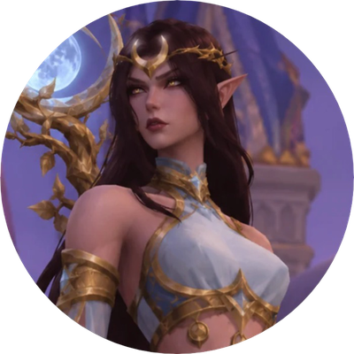
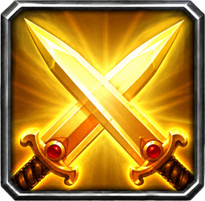
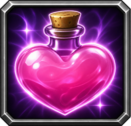
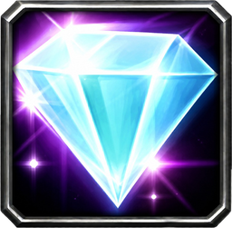
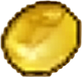
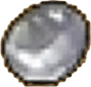

Hina, the Moon Maiden
Beyond the Horizon
Não esperava menos de você, Leviarthas. É bom saber que ainda existem guerreiros dispostos a enfrentar desafios e seguir seus próprios caminhos. Tenho algumas recompensas que lhe pertencem. Quanto ao que vem pela frente... bem, espero que já esteja pensando em sua próxima conquista, pois Azeroth nunca fica sem desafios, e tenho a impressão de que você ainda está longe de escrever seu último capítulo.
Quest Objectives
- Conceder à criadora desta missão um abraço bem apertado.
- Formar uma dupla e completar uma missão juntos hoje.
- Reconhecer uma conquista que seu eu do passado ficaria orgulhoso de ver.
- Forjar uma missão à altura de sua ambição e cumpri-la antes do próximo aniversário, demonstrando ser digno de figurar entre as lendas de Azeroth e de ostentar o lendário título de Senhor dos Escaravelhos (Scarab Lord).
Rewards
Choose your reward:

Lâmina da Determinação
Essência do Coração Gentil
Gema do Encanto Eterno
You will also receive:
15

11
Experience: 99,999 de felicidade